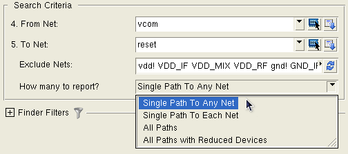

Find Path
Access with: View > Finder, then choose “Find Path” for “What type of search?”
Searches in: Layout or Source
Requires: PHDB, if present, or layout netlist for Layout Find Path; source netlist for Source Find Path. See Mask SVDB Directory in the SVRF Manual for information about the PHDB.
The “Find Path” search on the Finder tab finds paths in the layout or source between two or more nets. Nets may be excluded from the search. You can use a device filter in the Finder Filters to specify the devices and pins that make up the path if you do not want to use the default path definition.
Description
Default path definition: By default, the path consists of the connecting nets, source and drain pins of MOSFET devices (MP, MN, MD, ME, M, LDD, LDDD, LDDE, LDDM, LDDP), the positive and negative pins of resistors, diodes, and capacitors (R, D, C), and the C and E (collector and emitter) pins of bipolar devices (Q).
The default path definition is not the same as for the Pathchk operation.
The case-sensitivity of Find Path is determined by the statements Layout Case and Source Case in the rule file. If these statements are not included in the rule file, the default behavior (not case-sensitive) applies.
You can choose to find all paths or just one path; in the case of one path, the path with the fewest number of devices is returned.
When searching in the layout, you can also search between ports; the path is computed based on the port’s top-level nets.
The calculated path is shown in a results tree and in the Find Path Visualizer. To highlight the path or segments of the path, right-click the result listing.

Objects
Item |
Description |
|---|---|
From Net: |
Choose from the dropdown list1. |
To Net: |
Choose from the dropdown list1 or enter a net number. If “How many to report?” is “Single Path to Any Net” or “Single Path to Each Net,” you can enter multiple nets separated by a space. |
Exclude Nets: |
A space-separated list of nets that are excluded from the search. |
How many to report? |
Select from:
|
Layout Icon |
Select a net in an attached layout viewer. |
Source Icon |
Select a net in an attached schematic viewer. For Cadence Composer, you must press Ctrl-C on the keyboard to end the net selection process and enter the selected nets. (For Calibre 2012.3 and earlier releases, use the Esc key to end the net selection process.) |
Show Highlight Menu |
Click to display a menu with options for highlighting and displaying information about the net. |
Search Filters |
You can apply a device filter to the path search; check the device types you want included in the search. You can also use the device filter to specify the pins that make up the path. You can specify a layer filter which is used when selecting nets in the layout viewer for the “From Net” and “To Net” fields. The layer filter is not used for the path search. |
Usage Notes
Find Path Visualizer
A view of the calculated path is shown in the Find Path Visualizer, as shown in the following figure. The first 50 branches are shown as soon as they are calculated; click the icon to show the next 50 branches in the path.